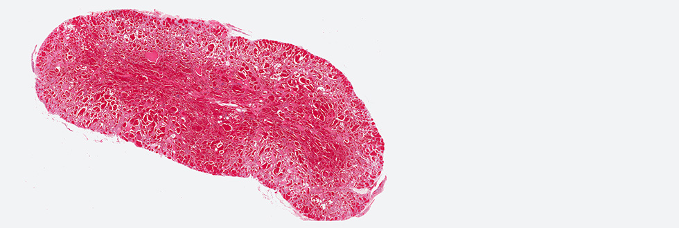

Patologie vascolari dell’occhioLe patologie vascolari dell’occhio sono state, in passato, variamente classificate fino alla razionalizzazione attuale dell’Orbital Society, che riunisce in 3 tipi le lesioni vascolari dell’orbita con una classificazione basata su principi emodinamici.
Dal punto di vista istologico la suddivisione prevede 3 tre grandi categorie:
L’emangioma dell’occhio e altre patologieGli emangiomi immaturi dell’occhio sono caratterizzati da ipercellularità e da proliferazione delle cellule endoteliali, non sono presenti alla nascita crescono nel primo anno di vita e tendono a regredire spontaneamente con gli anni. Dal punto di vista clinico un emangioma immaturo non è presente alla nascita, ha una crescita rapida postnatale seguita da una fase di proliferazione e regressione lenta; il sesso femminile è molto più colpito. Le patologie vascolari vere e proprie presentano delle anomalie strutturali e possono esser classificate in base al tipo di vaso coinvolto. Potremmo avere: malformazioni capillari, malformazioni arteriose, malformazioni venose, malformazioni linfatiche oppure potranno essere malformazioni combinate tra loro e dar origine a malformazioni capillaro- venose, capillaro-linfatiche ed artero-venose. Le malformazioni artero-venose sono divise, a loro volta, in malformazioni a basso ed alto flusso. Quelle a basso flusso, che sono le più frequenti, sono distinte in: capillari venose, linfatiche oppure in linfangiomi. Le malformazioni ad alto flusso, invece, comprendono le malformazioni arteriose, gli aneurismi, le ectasie, le coartazioni e le fistole arteriose-venose. Le patologie vascolari, invece, sono per definizione congenite, si sviluppano con gli anni e possono subire modificazioni grazie a stimoli traumatici, infettivi od ormonali, in questo caso il rapporto maschi-femmine è di 1:1. I tumori vascolari benigni, sono principalmente rappresentati dall’emangioma capillare dell’infanzia e dall’angioma cavernoso dell’età adulta. Gli emangiopericitomi sono invece, tumori vascolari maligni. Emangioma capillareL’emangioma capillare infantile è uno dei tumori benigni più frequenti nell’infanzia dovuto ad una proliferazione di capillari della stessa taglia e struttura dei capillari normali; può infiltrare i tessuti palpebrali e/o orbitari, manifestandosi sotto forma di piccole lesioni isolate oppure presentarsi in più sedi del corpo con masse di dimensioni più o meno grandi. Dal punto di vista clinico, l’emangioma capillare si manifesta, tipicamente, nei primi mesi di vita; solo in un terzo dei casi si manifesta già alla nascita. Si presenta come una lesione piatta, di colorito rosso violaceo contornata da teleangectasie venose. Con il tempo, la zona interessata apparirà rilevata con piccoli noduli lisci e lobulati. Nel caso in cui la lesione sia situata nei piani più profondi dei tessuti molli, apparirà come un rigonfiamento di colore porpora o bluastro, simulando, quindi, un ematoma. Nei primi 3-6 mesi dalla diagnosi il tumore subisce una fase di proliferazione rapida, dopo un periodo di stabilizzazione che dura circa 5-6 anni, si avrà la fase di involuzione definitiva, in cui diminuirà la tensione cutanea, la colorazione sarà più tenue, si cominceranno a riconoscere piccole aree grigiastre di atrofia in superficie, segni dell’inizio dell’involuzione. TrattamentoNei primi mesi di vita, se la lesione si presenta per dimensioni e localizzazione, in grado di compromettere lo sviluppo dell’apparato visivo, si richiede un trattamento precoce. Prima di ricorrere al trattamento chirurgico sono state utilizzate con successo terapie sclerosanti utilizzando soprattutto corticosteroidi a lento assorbimento. Questi ultimi hanno il vantaggio di agire come farmaci antiinfiammatori e sclerosanti sui vasi immaturi e sono in grado di accelerare l’involuzione della lesione in tempi brevi. Molto spesso, tuttavia, sono richieste più somministrazioni prima di ottenere il risultato voluto con evidente rischio di cushing iatrogeno per sovradosaggio. Dal 2007 è stata evidenziata la pronta efficacia del propanalolo somministrato per via sistemica al dosaggio di 2 mg / kg di peso corporeo al giorno per un periodo variabile di circa 6 mesi o più. a seconda delle dimensioni e della localizzazione della lesione. Trattandosi di un farmaco beta bloccante, prima di iniziare la terapia è indispensabile il monitoraggio clinico e cardiologico del paziente, ma, in assenza di alterazioni cardiache , è risultato generalmente ben tollerato. Nei casi in cui l’angioma non rischia di provocare ambliopia ed offre solo un problema estetico, conviene non trattarlo ed attendere l’involuzione spontanea nei primi 6-7 anni di vita. Emangioma cavernosoL’emangioma cavernoso rappresenta il tumore benigno dell’orbita più frequente, interessa di preferenza il sesso femminile, l’età media di insorgenza è di (più che insorgenza si dovrebbe dire in cui si manifesta) 40-50 anni. Tipicamente è una lesione monolaterale, con manifestazioni cliniche tardive, caratterizzate dalla comparsa di esoftalmo lentamente progressivo con assenza di dolore; si presenta come una massa riducibile e non pulsante; nel caso delle localizzazioni anteriori si può apprezzare una massa sotto palpebrale ben delimitata non aderente ai piani profondi. Nel caso di una localizzazione intraconica le manifestazioni cliniche sono più evidenti perché il paziente potrà riferire una riduzione del campo visivo e/o dell’acuità visiva. Diagnosi radiologicaL’ecografia dell’orbita è il primo esame consigliato in caso di esoftalmo monolaterale o quando si sospetti una neoformazione orbitaria. In modalità A (Amplitude Mode), condizione in cui gli echi vengono rappresentati come picchi di ampiezza proporzionali alla loro intensità , il quadro ecografico in questo caso, mostra i bordi del tumore ben definiti, con un orletto ben visibile. In modalità B (Brightness Mode), in cui gli echi vengono visualizzati come punti di luminosità proporzionali alla loro intensità , si può evidenziare una massa intra/extraconica con una superficie posteriore ben definita. All’interno della lesione si riconoscerà una struttura irregolare che, associata ad una capsula ben delimitata è tipica espressione di un emangioma cavernoso. a T.A.C. evidenzia una struttura, nella maggior parte dei casi intraconica, ben circoscritta avente forma rotonda od ovalare, con contorni regolari. Raramente questo tumore si presenta in sede extraconica. La sede preferenziale di queste lesioni è sulla parete laterale dell’orbita e determina uno spostamento mediale del nervo ottico. Dopo iniezione del mezzo di contrasto, l’emangioma presenta, nella medesima percentuale dei casi, una struttura omogenea od eterogenea in funzione della presenza di setti, calcificazioni o coaguli all’interno della massa. La R.M.N. orbitaria e cerebrale, permette una migliore definizione dei tessuti molli; l’emangioma cavernoso appare, tipicamente, isodenso nei confronti dei muscoli extra orbitari nella sequenza T1, contrastando con il segnale iperdenso della componente grassa presente nella sequenza T2. Anatomia Patologica
La diagnosi differenziale si pone nei confronti del linfangioma, del rabdomiosarcoma, del neuroblastoma, delle cisti dermoidi. Il punto in comune di tutte queste patologie, a differenza dell’emangioma cavernoso, risulta essere il fatto di presentarsi con un esoftalmo a rapida crescita. I maggiori problemi di diagnosi differenziale si pongono però nei confronti dei due tumori che più frequentemente possono essere confusi con l’emangioma cavernoso: il fibroma solitario dell’orbita e lo schwannoma. In entrambi i casi può essere di ausilio la diagnostica per immagini. Nel caso del fibroma solitario dell’orbita la neoplasia alla TAC appare come una lesione ben circoscritta e capsulata, se la lesione fosse presente da anni si può osservare compressione ossea senza sua erosione. Con il mezzo di contrasto si evidenzia la presenza di una lesione delimitata con aspetto unico; anche nel caso di lesioni multiple o multilobulari, l’aspetto radiologico non cambia, sarà quindi al momento dell’atto chirurgico che si scoprirà l’aspetto plurilobulato. Alla Risonanza Magnetica nelle sequenze T1 apparirà come una lesione modestamente isodensa in rapporto con i muscoli, mentre sarà ipodensa in contrasto con il grasso periorbitario. Nelle sequenze T2 potrà invece apparire con un’alternanza di aree iso-ipodense simulando il quadro di uno schwannoma. Lo schwannoma alla T.A.C. appare come una lesione ben delimitata, arrotondata ed ovalare; si evidenziano e si alternano aree a minor densità ed aree a densità simile a quella dei muscoli oculo-motori; queste aree ipodense intratumorali sono significative e tipiche dei tumori neurogeni e probabile espressione di cisti da necrosi emorragica. Chirurgia per il trattamento dell’emangiomaIl trattamento dell’emangioma è prima di tutto chirurgico e si basa sull’asportazione radicale della lesione. I risultati sono soddisfacenti e le recidive rare; le difficoltà sono legate alla vicinanza ed ai rapporti con muscoli, vasi e strutture nervose. L’approccio mediante orbitotomia laterale e osteotomia della branca montante dello zigomatico, rappresenta la tecnica più classica d’accesso, in quanto, permette di raggiungere gli angiomi cavernosi retrobulbari intraconici che sono i più frequenti. Altri accessi chirurgici sono condizionati dalla localizzazione della neoformazione; l’accesso per via transcongiuntivale è preferibile nelle localizzazioni anteriori. Sarà effettuata l’anestesia generale. Il Dott. Garzione è disponibile per valutare gli interventi necessari in caso di presenza di patologie vascolari dell’occhio, come gli emangiomi. È possibile richiedere un appuntamento presso una delle nostre sedi ai seguenti contatti:
Sede di Roma +39 06 3728555 – +39 06 374145 Sede di Salerno +39 0974.62397 |

Anomalie vascolari dell'orbita